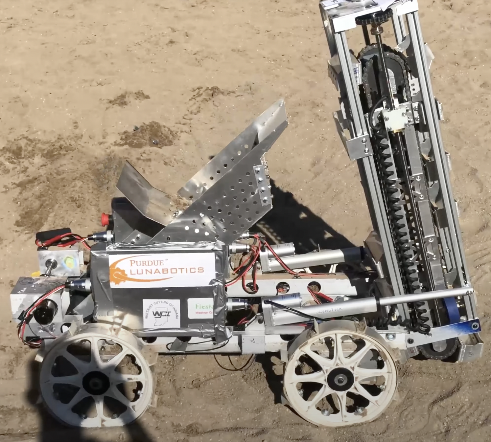
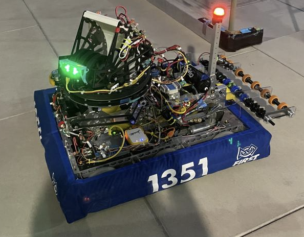
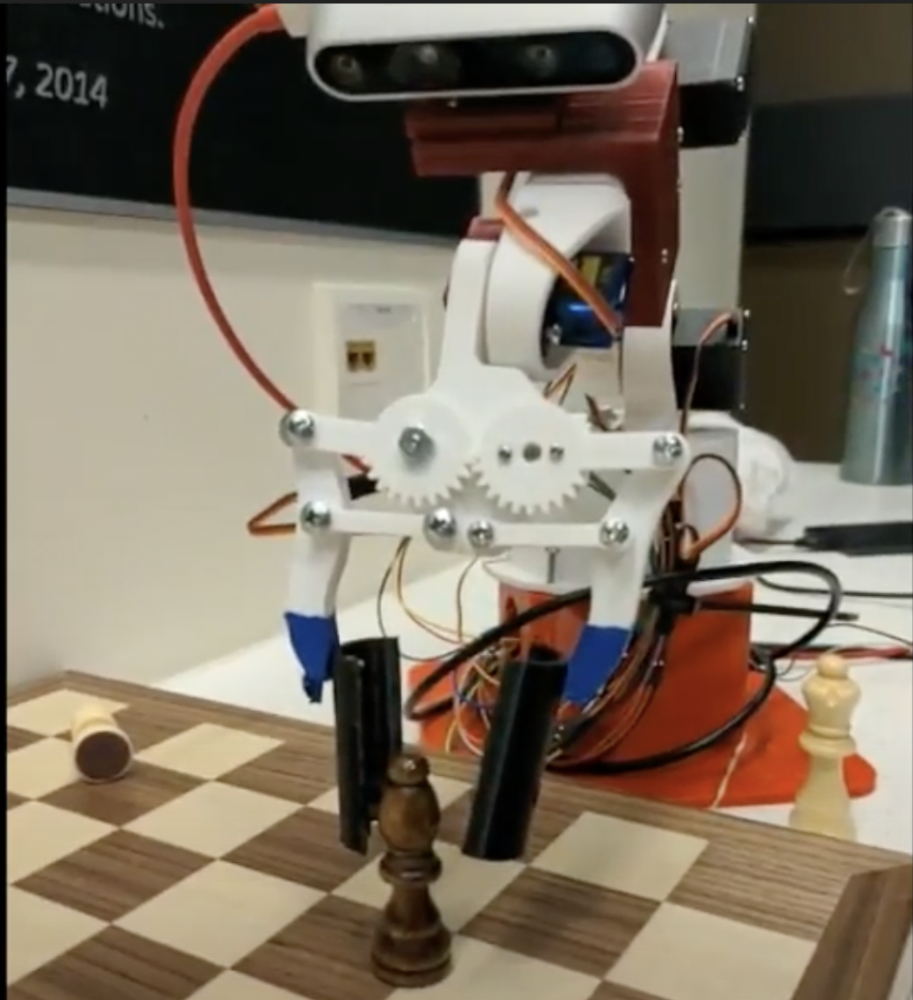
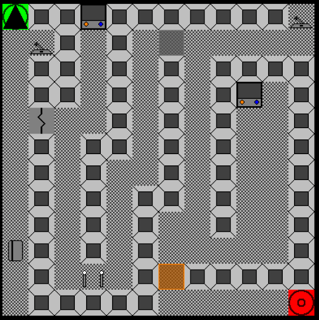
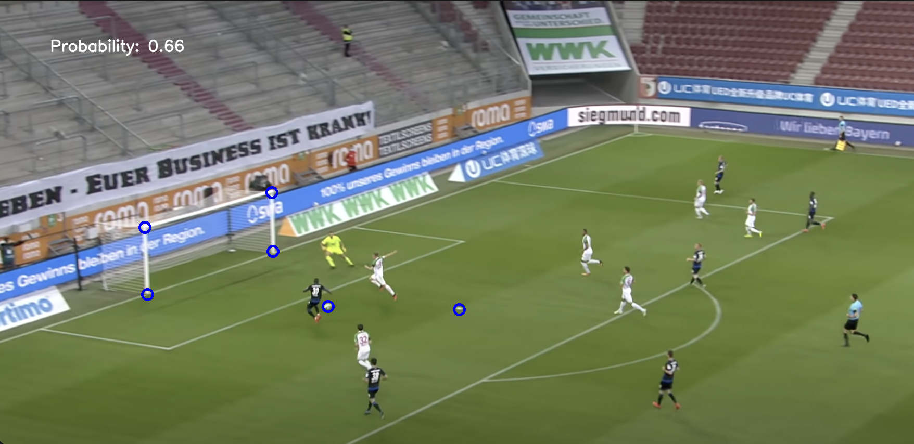

Purdue Lunabotics

As a member of the Purdue Lunabotics team, I am developing algorithms to help the robot navigate around unknown terrain. We use cameras and LIDAR to map out our surroundings and are implementing graph algorithms and path following controllers to move the robot autonomously.
Skills / Tools Used:
- C++
- Python
- ROS
- Numpy
Poker Calculator

I made a Poker Probability Calculator that helps calculate the odds of a player winning a poker hand given the current state of the game. The code works for any amount of players and any current game state (flop, turn, or river).
Skills / Tools Used:
- HTML / CSS / JS
FRC Robotics

I was the programming lead for my FRC Robotics Team: TKO Robotics. During my time on the team, I created state machines for subsystems, developed robotic motion control algorithms, and educated team members about Java and robot programming. We also won two autonomous awards in 2019 and 2021.
Skills / Tools Used:
- Java
ARC

I am currently a part of the Robot Arm team in Purdue ARC (Autonomous Robotics Club). Currently, I am working on implementing visual servoing to accurately position the arm to pick up and place chess pieces, with the final goal of allowing the arm to play a full game of chess.
Skills / Tools Used:
- C++
- Python
- ROS
- Numpy
Maze Maker

I created my own videogame that involves creating mazes, as well as navigating mazes made by other players. The mazes have lots of custom components to make interesting levels, and the levels made by players can be saved so other people can load those same levels.
Skills / Tools Used:
- Java
- LibGDX
Soccer Probability Calculator

I developed a program to predict the probability of a player scoring a goal in a soccer game, given an image. I took into account the position of the goal itself, the ball, and all the players to create the algorithm.
Skills / Tools Used:
- Python
- OpenCV
- Numpy